<<スキル上げ>>
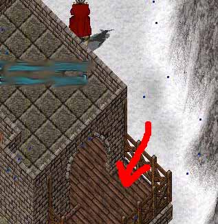
ペット置き場ですか？
じゃあ、私のペットも置かせてもらっていいですか？
（ペット）
置かせてもらいますね。
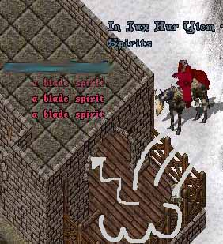
ひとなつっこくて、知らない人にでも、すぐにじゃれつくんですよ。
ちょっと爪がいたいんですけどね。
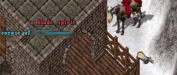
あ。
気がついたら瞑想がGM超えてた。
他のスキルも結構出来上がってる。
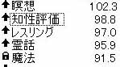
んで、霊話GMにしようと思うんですよ。
前、GMだったんですけど、
死んだ人の言葉が嫌でGM▽しました。
でもHP立ち上げたから、死んだ人の言葉とかも面白いじゃないですか。
また嫌になったら下げればいいし。
あと、自分が死んだ時の意思表示が出来ますしね。
そんなこんなで、スキル上げです。
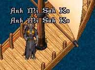
アクセでネクロ70以上にしてリッチ化であみさこです。
私、結構、画面見る派です。
放置で流すのは楽ですけど、左下の
「スキルが０.1あがったヨー。」
って青い文字が出るのを見るのが好きなんです。
暗いですね。
でも、さすがにずーっと
「あみさかｓｋ・・・あみさかｓｋ・・」
聞いてると精神的にどうかなっちゃいそうなんで
工夫してます。
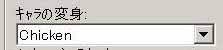
これ。
UOAのキャラ表示変更。
死んで幽霊になってもニワトリになっとけばカラー表示になるとか
色々あって面白い。
にわとりー。
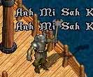
オーク。
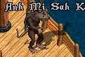
ねずみー。
ポリモフもそうなんですけど、あみさこで攻撃モーションするんですよ。
おもしろいです。
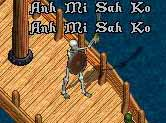
ガイコツがぃぃ！
海賊っぽくて気にいりました。
ガイコツいいなーって見てると。
敵発見！！
おもかじイッパイ！
敵は前進している！
航路をふさげ！
ドーン。
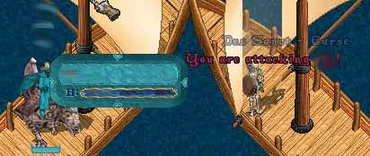
船上の戦い。
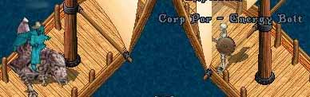
ワタシ、ガイコツ。オマエ、コロス。
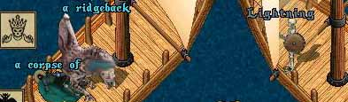
ワタシ、ガイコツ。ツヨイ、ガイコツ。
（相手には普通に表示です。もちろん。）
敵は壊滅！
ただちに撤退セヨ！
おもかじいっぱーい。
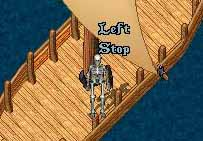
おっれはーがいこっつー♪
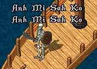
つっよーぃ、がいこっつー♪
無限航路一周した。
スキルが1．２くらいあがったー。
「ooOoOo」
「アイサイサー」
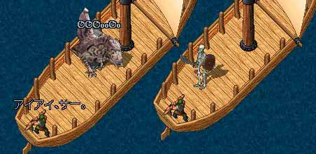
・・・・・・・。
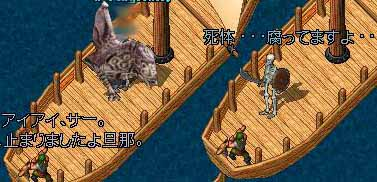
へんじ が ない。 ただ の しかばね の ようだ。
うわー。
必死に「前進」とか言ってたから画面見てるのかと思いました。
放 置 だ っ た ん で す ね 。
あと数時間後くらいに
「さー、スキルどんくらいあがったかなー？」って
画面見たら、灰色じゃ嫌ですよね・・・。
しかも死体腐り済。
最悪な状況ですよね・・・。
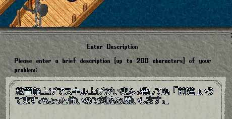
トドメ。
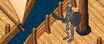
待ちまーす。
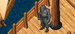
まだかな、まだかなー♪
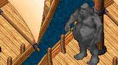
GMのおじさんまだかなー♪
ぶっちゃけると30分以上待ちました。
放置されてる方は30分くらいごとに画面みればいいと思います。
こんなんするんだったら、普通にスキルあげときゃよかった。
なんかeサーチっての見たら、不在マクロ専用報告フォームってのあるし・・・。
そっちにしとけばよかった。
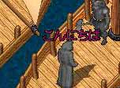
やっときたー。
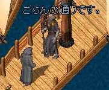
ごらんの通りです。
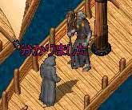
わかりました。
早。
まあ、分かりやすい状況。
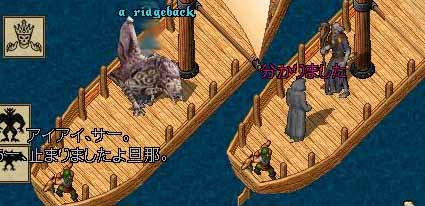
ずっと進めない前進を試みる幽霊。
んで会話。
田中「ぶっちゃけ、こうゆうコールって必要なのですか？」
GM「放置を見たらコールをするかはプレイヤーの判断でいい。
しなくても別にいいし、損害を受けるような放置ならば
コールして下さい。」
というようなこと言われた。
もう、殺せたら次からしません。
正直、待つ時間まんどくさい。
不在マクロ専用投稿フォームにしときます。
（結局はする）
今回のこのGMさん、すんごいぃぃ感じの方でした。
まあ
放置スキル上げが自分にとって不利益かっていうと。
スキル上がる＞強くなる＞田中瞬殺
損害ですよ。
んで、スキル上げやる気おきなくなって
鉱山。
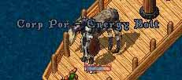
だれも。
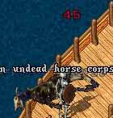
いなかった。
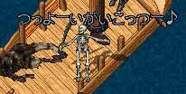
おしまい。